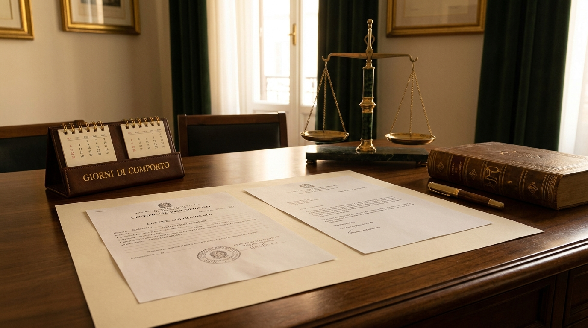

Licenziamento durante la malattia: nullo se anteriore al comporto
Il licenziamento intimato mentre il lavoratore è ancora in malattia, prima che si sia esaurito il periodo di comporto, è nullo. La nullità opera anche se il datore ha sbagliato i calcoli in buona fede. La questione incide sul regime di tutela applicabile e sui termini per reagire. Vediamo cosa prevede la norma e quali sono i passi concreti.

Il caso e la questione
Il periodo di comporto è l'arco di tempo durante il quale il lavoratore assente per malattia conserva il posto. Finché quel periodo non è esaurito, il rapporto è protetto: il datore non può recedere per ragioni connesse alla malattia.
Il problema sorge quando il licenziamento arriva *prima* della scadenza del comporto, magari per un errore di conteggio dei giorni di assenza. La risposta è netta: il recesso è nullo, non semplicemente annullabile. E la differenza non è solo terminologica.
Inquadramento normativo
La norma di riferimento è l'art. 2110, comma 2, del codice civile. La disposizione consente al datore di recedere dal rapporto soltanto *decorso* il periodo di comporto fissato dalla legge, dagli usi o dalla contrattazione collettiva. Prima di quel momento il potere di recesso per superamento del comporto semplicemente non esiste.
La giurisprudenza qualifica l'art. 2110 c.c. come norma imperativa. Da qui la conseguenza: il licenziamento intimato in violazione di tale norma è nullo, non meramente illegittimo. Sul perimetro del computo del comporto si veda l'orientamento espresso dalle Sezioni Unite (cfr. Cass. SU n. 12568/2018; gli estremi sono richiamati a fini orientativi e vanno verificati nel caso concreto).
Nullità, non annullabilità: perché conta
La distinzione è centrale.
Un licenziamento annullabile (ad esempio per difetto di giustificato motivo) produce comunque effetti finché non viene caducato dal giudice e segue regimi sanzionatori differenziati. Un licenziamento nullo per violazione di norma imperativa, invece, è radicalmente improduttivo di effetti fin dall'origine.
Sul piano sanzionatorio, la nullità conduce alla reintegrazione cosiddetta piena in entrambi i regimi: tanto ex art. 18, comma 1, dello Statuto dei lavoratori per gli assunti prima del 7 marzo 2015, quanto ex art. 2 del D.lgs. n. 23/2015 (tutele crescenti) per gli assunti successivamente. Il lavoratore ha diritto al ripristino del rapporto e a un'indennità risarcitoria parametrata alle retribuzioni perdute. La concreta misura va verificata caso per caso.
L'errore di calcolo del datore è irrilevante
Un punto spesso frainteso: la buona fede del datore non salva il licenziamento. Se i giorni di assenza sono stati conteggiati male e il comporto non era in realtà esaurito, il recesso resta nullo. Non rileva l'intenzione, rileva il dato oggettivo del mancato superamento.
L'onere di provare l'effettivo superamento del comporto grava sul datore di lavoro. È lui che deve dimostrare, giorno per giorno, il raggiungimento della soglia.
I confini: giusta causa e tempestività
Due precisazioni utili.
Prima: durante la malattia il datore può comunque licenziare per una giusta causa autonoma, estranea alla malattia stessa (ad esempio un fatto disciplinare grave). In quel caso non si applica la tutela dell'art. 2110 c.c., perché la causa del recesso è diversa.
Seconda: quando il comporto è effettivamente superato, il recesso deve essere tempestivo. Un'attesa ingiustificata può far ritenere che il datore abbia rinunciato a far valere il superamento.
Va infine segnalato il profilo, sempre più rilevante, del rapporto tra comporto e disabilità. Le assenze legate a una condizione di disabilità possono porre temi di discriminazione indiretta ai sensi del D.lgs. n. 216/2003: in alcuni casi l'applicazione meccanica del comporto ordinario è stata ritenuta idonea a integrare un trattamento discriminatorio, con conseguente nullità del licenziamento.
Cosa fare in concreto
- Ricostruisci il calcolo. Distingui tra comporto secco (un'unica malattia continuativa) e comporto per sommatoria (più episodi nell'arco di un periodo): le soglie e i criteri di computo differiscono e sono fissati dal contratto collettivo applicabile.
- Verifica la data del recesso rispetto alla soglia. Se il licenziamento precede l'esaurimento del comporto, si profila la nullità a prescindere dalle motivazioni addotte.
- Rispetta il doppio termine dell'art. 6 L. 604/1966. Impugna il licenziamento per iscritto entro 60 giorni dalla comunicazione (impugnazione stragiudiziale); a pena di decadenza, deposita poi il ricorso giudiziale — o comunica la richiesta di conciliazione/arbitrato — entro i successivi 180 giorni.
- Conserva la documentazione medica. Certificati e prognosi sono decisivi per dimostrare il mancato superamento del comporto.
- Valuta il profilo discriminatorio. Se le assenze sono riconducibili a una disabilità, è opportuno verificare l'eventuale rilevanza ai sensi del D.lgs. n. 216/2003.
È opportuno verificare con attenzione il calcolo del comporto prima di assumere qualsiasi decisione, tanto sul versante datoriale quanto su quello del lavoratore.
---
*Contributo informativo a cura di Tamburro & Partners - Avv. Giuseppe Tamburro. Non costituisce parere legale.*
Ogni storia di lavoro ha i suoi tempi.
Se gestisci HR e vuoi un confronto su contenzioso, ispezioni o licenziamenti, scrivi allo studio. Ti rispondiamo entro un giorno lavorativo.